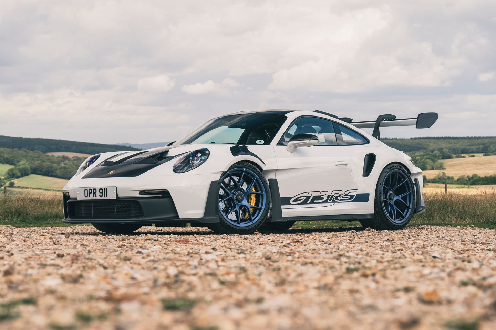

Porsche
Porsche 911 GT3 RS
أكثر نسخ 911 تطرفًا، صممت للحلبات مع ديناميكية هوائية متقدمة وأداء استثنائي.
أكثر نسخ 911 تطرفًا، صممت للحلبات مع ديناميكية هوائية متقدمة وأداء استثنائي.

| المحرك | 4.0 لتر بوكسر طبيعي التنفس |
| عدد الأسطوانات | 6 |
| القوة | 525 حصان |
| عزم الدوران | 465 نيوتن متر |
| ناقل الحركة | 7 سرعات PDK |
| نظام الدفع | خلفي RWD |
| التسارع (0-100) | 3.2 ثانية |
| السرعة القصوى | 296 كم/س |
| عدد المقاعد | 2 |
| نوع الوقود | بنزين |